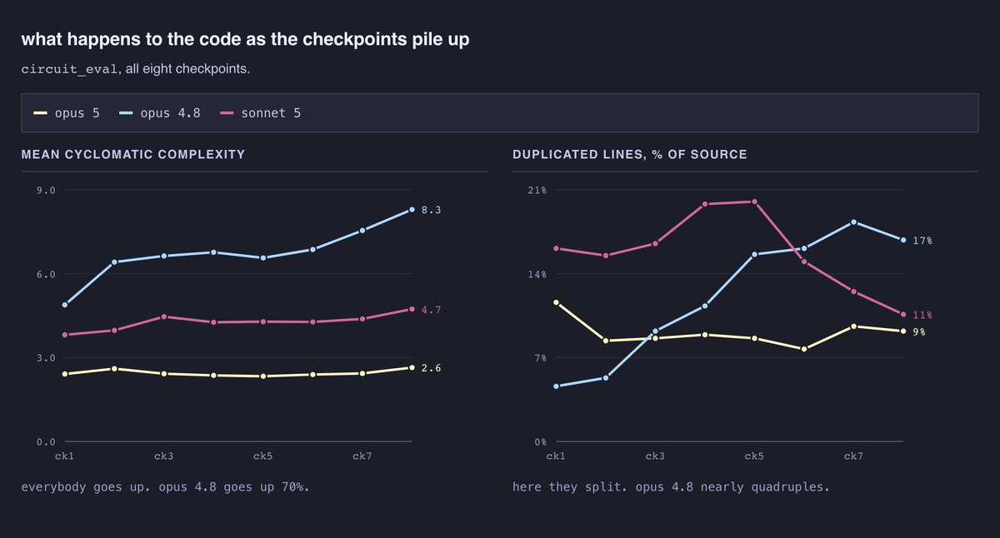
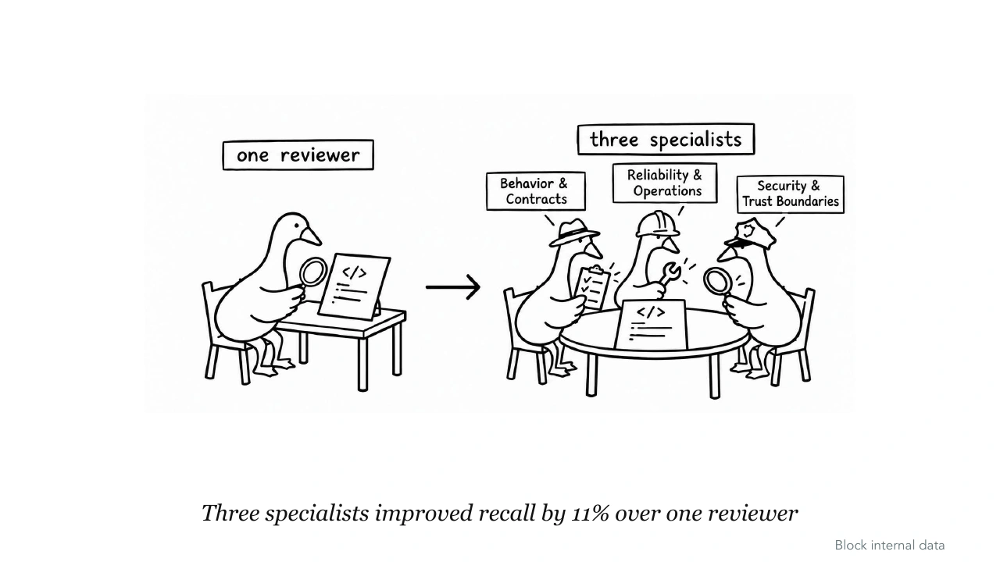
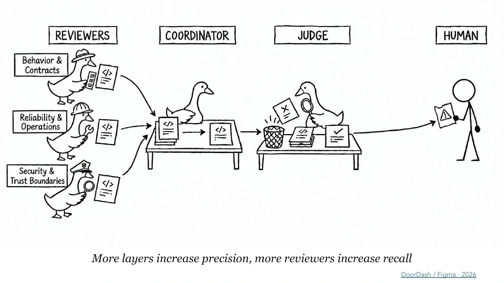
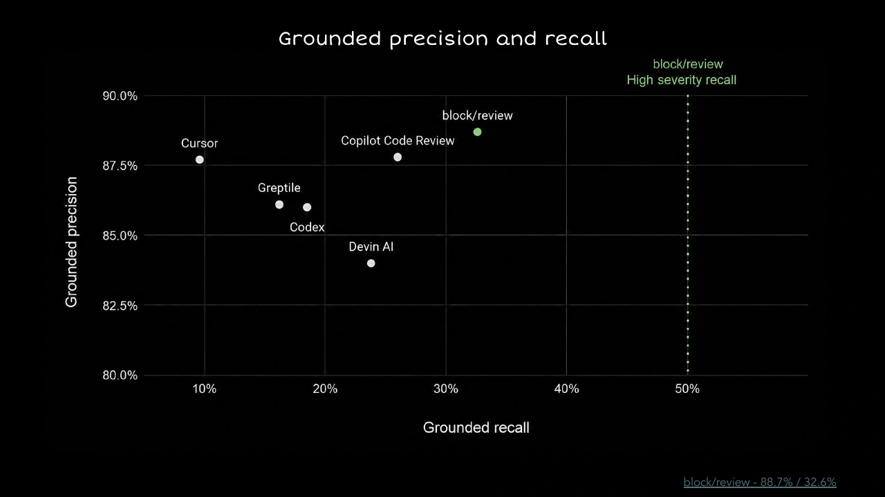
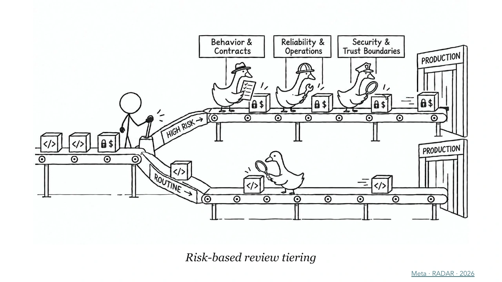
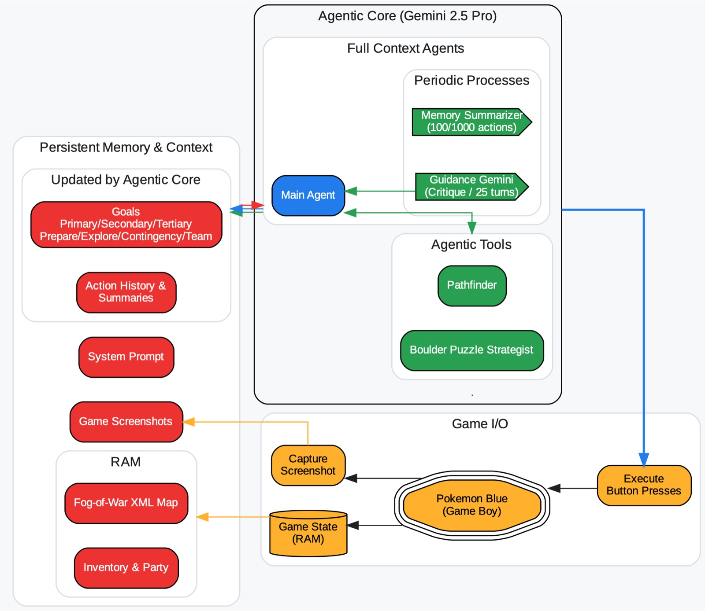
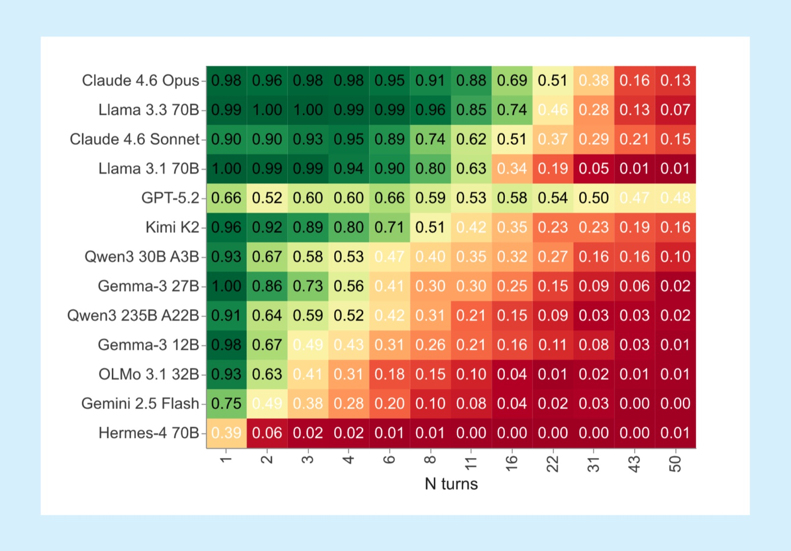
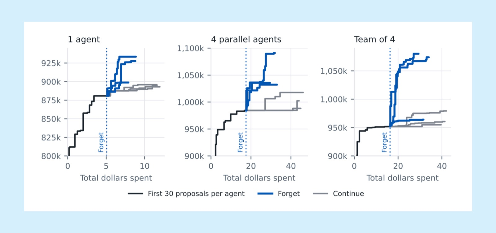

Checks and Imbalances
Coding agents have made producing code much cheaper. Checking it is another matter. Notes from three conferences on the unglamorous machinery that decides whether an agent can be trusted
Block’s first AI code reviewer had a problem: people kept deleting its comments.
The bot had too much to say, and its coworkers stopped listening. They did what people do with a colleague who comments on everything: they tuned it out, then deleted its comments. By the time Joah Gerstenberg took the stage at AGNTCon in San Jose in October to explain how Block rebuilt the tool, he had reduced the lesson to one slide: “A reviewer that’s muted catches nothing.”
That line kept coming back to me over a month of conferences: WeAreDevelopers World Congress in San Jose in late September, CoreWeave’s Fully Connected in San Francisco a week later, and AGNTCon + MCPCon in October. I went expecting talks about better models. The ones worth bringing home were about something less glamorous: the machinery around the model, which decides what it sees, what it’s allowed to touch, and whether anyone should believe what it produces.
The reason is economics, of the most old-fashioned kind. Coding agents have made producing code much cheaper. The cost of understanding, integrating and maintaining it remains. At Block, Gerstenberg said, a typical reviewer now reads about three times as many lines as a year ago. The cost hasn’t gone away. It has moved from the person writing the code to the person checking it, and, increasingly, to the software that checks it for them. Cheap supply, it turns out, does wonders for demand, including the demand for reviewers.
Schematic: where the work shifts, not measured costs.
BEFORE agents AFTER agents
writing code ████████████ writing code █
checking code ████ checking code ████████████
bad code cost ████████ bad code cost ████████
Across the talks, I kept coming back to the same problem: how do we know an agent is doing good work, and how do we keep it on track? Testing the reviewer is part of that. So is giving the agent useful context and setting limits on what it can do. Passing one check doesn’t remove the need for the others.
Agree on the work → Run with focused context → Review the result
▲ │ │
└──────── Learn from evaluated outcomes ────────┘
Runtime permissions and logs apply throughout.
Lights out
Dex Horthy, founder of HumanLayer, put it in manufacturing terms. Picture software delivery as a factory line: an idea, a ticket, the build, tests, a pull request, CI, human review, production, user feedback. Agents sped up one box, the build, from hours or days to minutes. Human review still takes hours or days. “The bottleneck moved,” he said, and every box downstream of the build now feels it.
Watch the talk (24 min) · There’s No Dark Factory Without Better Software Verifiers
The obvious fix is to delete the review box: a “lights-off” factory where agents ship straight to production. HumanLayer tried it in July 2025. It didn’t hold. A factory with the lights off still needs someone to look at what comes off the line.
Horthy’s explanation is the most useful idea I took from the fall: maintainability has no fast oracle. A test tells you in seconds whether code works. Whether it’s easy to change only shows up weeks later, often at 3 a.m., when someone is paged and has to read it. That delay makes maintainability harder to reward than passing tests. A model can satisfy the immediate checks while leaving the next developer a harder job. In his write-up, Why Software Factories Fail, he puts it bluntly: “there is no penalty for eroding codebase maintainability.”
The evidence he collected points the same way. SlopCodeBench, a benchmark that keeps adding requirements to the same codebase, saw the best model at launch score 14.8%, and newer models only a point or so higher. Faros AI data in his write-up shows that after teams adopted agents, 31.3% of pull requests merged with no review, incidents per pull request rose 242.7%, and bugs per developer rose 54%. Horthy is careful to call that correlation, not proof. But the direction is hard to miss.
His own small experiment makes it concrete. He had three models extend the same program over eight rounds of new requirements. Opus 4.8’s average function complexity rose about 70%, and its share of copy-pasted lines nearly quadrupled.

A linter he wrote for TypeScript “slop” found about 175 issues per thousand lines in the agents’ code, against 15 in HumanLayer’s own monorepo, roughly 12 times as many. The baseline isn’t human-written code. HumanLayer’s repo is itself almost entirely AI-generated; the difference is that people review it carefully. That makes his point better than any slide could: the gap isn’t humans versus AI. It’s reviewed versus unreviewed.
So until maintainability has a fast oracle, Horthy’s advice is to read the code, and to make reading it cheaper by moving review earlier.
That advice is older than AI. Horthy defines his “software factory” as it stood in 2022, right before AI, when teams front-loaded the work because building and review both took days: planning, architecture proposals and sprint planning, done together. He wants that habit back.
Before an agent writes a large diff, agree on four things: the product problem, the architecture, the program design (types, signatures, which files change), and one thin working slice from database to UI. The program design is what he calls “the missing middle.” Most plans skip from architecture straight to code and leave the agent to improvise everything in between. His point was that time spent agreeing on the design up front can save hours of review.
That brought me back to familiar habits: review the design before building, and write tests before the implementation. I want those steps built into the workflow.
Horthy’s target is modest, which is rare at a technology conference and part of why I believe it: two to three times faster with the quality kept, not the ten- to hundredfold speedups on conference banners.
Quiet, please
If people can no longer read all the code, the automated reviewer has to be one they listen to. That’s where Block’s rebuild comes in.
Gerstenberg’s team made one choice above the others: precision over recall. Precision asks how many reported findings are real; recall asks how many real issues the reviewer catches. “A useful reviewer stays quiet when it has nothing worth saying,” he said. Every finding has to be tied to a customer consequence: a trigger, a code path, and an outcome. Could this change double-charge someone? As false positives fell, engineers started acting on the comments again.
Watch the talk (21 min) · Cut The Noise: Building a Code Reviewer You Can Trust
The architecture spends compute on doubt rather than volume, an unusual design choice in an industry that mostly sells confidence. Three specialist reviewers, covering behavior and contracts, reliability and operations, and security and trust, each read the whole change and propose findings.

A coordinator then tries to disprove each finding. Anything it drops goes to a judge running on a different model, which can restore findings the coordinator was wrong to cut.

On ReviewBench, an open benchmark of labelled pull requests, Block’s reviewer reached 88.7% precision and 32.6% recall, and caught half of the high-severity issues in a separate subset. A recall of one in three sounds low until you compare it: GitHub Copilot’s grounded recall when ReviewBench launched was 26%. And when Block compared its reviewer’s findings with another reviewer’s, they overlapped on only 22%. That suggests complementary reviewers may catch more, provided the combined findings still earn human attention.

Two more ideas from that talk stuck with me. First, route human attention by risk. Gerstenberg cited Meta’s RADAR work: “A new test and a ledgering-contract change should not require the same treatment.” At Block, people still read every change touching infrastructure, public claims, SOX compliance, money movement or personal data.

Second, old review comments make good measuring sticks but poor ingredients. A past comment records a conclusion, not the reasoning behind it. Feeding comments back into the reviewer is part of what made Block’s first version so noisy.
He also measures the reviewer four ways, because any one number can be gamed:
- Precision: how many reported findings are real. This is easier to keep high if you say almost nothing.
- Recall: how many real issues the reviewer catches. This is easier to raise if you flag everything.
- Engineer response: how often engineers act on a comment.
- Downstream consequences: how often acting on a comment caused a problem later.
The last two matter most in day-to-day use: whether people trust the comments enough to act, and what happens when they do.
Trust, but verify the skill
A reviewer is itself an agent workflow. Before trusting its verdicts, we need a way to test the instructions and tools that produce them.
After CoreWeave, I tried applying what I’d learned about evaluation to our own workflow. I scored saved answers from one of my agents with NVIDIA’s NeMo Agent Toolkit, using a self-hosted model as the judge. The answers scored 0.83 and 0.88 out of 1, but I didn’t come away with a clear conclusion about how to make that useful for us.
Our focus is agent-assisted coding and evaluating those workflows, rather than evaluating models in isolation. The judge saw the final text, but not the tool calls, logs or code the agent had read. Those scores couldn’t tell me whether the agent had investigated the right things, made a sound change or verified the result. That is the gap I still want to close.
Teams package reusable agent workflows as skills: folders of instructions and scripts that teach an agent one kind of job. They spread like helpful notes. But Michael Larson of Christensen Solutions argued at AGNTCon that they behave like code, with code’s failure modes. A skill “worked once,” by luck, and nobody re-ran it. A skill can hide malware in a setup step. And every untested revision is paid for twice, in tokens and in review time.
Watch the talk (19 min) · Shipping Agent Skills Safely: CI/CD, Evals, and Guardrails
His fix is to give skills a release process: version, evaluate, review, release. The evaluation step is the one most teams skip, and it’s smaller than it sounds. Collect five to ten real tasks, including ones the agent currently gets wrong. Write deterministic checks that pass or fail without an AI judge. Then run the current skill and the proposed one side by side on the same fixtures, every time the skill, the model or the agent client changes.
frozen fixture ─┬─► skill v1 ─┐
(a known bug, │ ├─► finds the real defect?
a known log) └─► skill v2 ─┘ invents nothing?
leaves other files alone?
His test-driven-development harness shows the same idea at a finer grain. A planner hands one red-green-refactor cycle to a fresh subagent, which returns a structured record of its work. Each test case runs in a disposable copy of the repository, and a small judging model grades each phase. The distinction on his slides matters: “Promptfoo records scores. CI checks completion. No pass thresholds.” In that harness, scores support learning; they are not yet release gates.
He closed with a challenge to the room: add an eval to one skill you’re sharing.
The evaluation itself needs checking. Han Xu of Amazon, presenting the Harbor evaluation framework, advised checking the task first, then the harness, and only then the model. After analyzing more than 6,000 failed agent runs, his team found that about a third of the hardest benchmark tasks were broken. The agents had been failing exams with no right answer. His team also compared AI judges with human graders before trusting their scores. That is the kind of check I still need to make useful in our coding workflow.
Session details · Why Your Agent Is Failing: Failure Modes from 6,000+ Agent Trajectories
Recording not located.
Forget about it
A workflow can pass its evaluations and still lose its way during a long run. Drew Breunig’s talk explained the progression: wrong information enters, the conversation reinforces it, and the agent keeps working from an assumption it should have abandoned.
Watch the talk (43 min) · How Contexts Fail (and How to Fix Them)
Long context windows hold more information, including more errors. Breunig groups the failures into four kinds:
| Failure | What happens |
|---|---|
| Poisoning | A false fact keeps getting reused. |
| Distraction | History crowds out fresh reasoning. |
| Confusion | Irrelevant context drives the choice. |
| Clash | Instructions and facts disagree. |
His favorite example of poisoning is a game. When Google had Gemini 2.5 play Pokémon Red, the model at one point set out to find tea, an item from a different edition of the game. The version it was playing needed lemonade. The wrong goal went into the agent’s memory and survived every later summary. A concise memory is still wrong if the fact inside it is wrong.

The research he cited shows how history can reinforce the mistake. In Do as I Say, Not as I Do, Camassa and Shiller gave models an explicit instruction, then a conversation history that kept doing the opposite. In that experiment, Claude 4.6 Opus followed the instruction 98% of the time with one contradicting turn and 13% with fifty. Typing “stop doing X” into a long session competes with every turn that did X.

The last step has a name. Breunig calls it context inertia: the agent locks onto one hypothesis and will not let go. In an Anthropic report he quoted, a Qwen agent spent hours debugging package versions when the real problem was an incompatible API. More time gave the mistaken explanation more opportunities to repeat itself.
Breunig’s fixes address what enters the context and what stays there: select relevant information, separate noisy work into fresh subagents, and refresh the context when it stops helping. Tool selection is one practical example. His demo used a small model to rank tools against the request and pass the top eight to the larger model. That reduces clutter. Permission to use those tools still needs a separate check.
Breunig also described a personal habit worth borrowing. In his published transcript, he says he starts checking the context around 200,000–300,000 tokens and may reset before a big job. It’s a personal tripwire, not a target.
His tripwire assumes the context filled up during the work. Our agents can trip it before the work starts. If the first prompt already needs 500,000 tokens, or even a million, I’d check what our documentation and tools are loading before blaming the model. If much of that context is irrelevant, we may be introducing confusion on turn one.
Cutting tool calls is a different job from trimming the tool list, which is what his demo did. When a routine task takes 300-plus calls, I want to know what the agent keeps rediscovering and how much output is piling up. Clear documentation beside the code was good practice before agents. Now it has a second reader, one that starts every session with no memory of the last.
For a run that has already stalled, a fresh start can help. In Scaling Discovery Requires Forgetting, another paper he cited, restarting from the best result so far added 4.5% to 9.2% over the next thirty attempts, against under 2% for agents that kept their full history, which also cost up to twice as much. The useful result survived; the accumulated conversation did not.

Forgetting has to be done carefully, though. Compacting a conversation that contains a wrong idea produces a neater summary of the same wrong idea. The approach I want to test is a checked handoff: a fresh context that carries only verified facts, the hypotheses already ruled out, any side effects already done, and the approvals still in force.
COMPACTED HISTORY CHECKED HANDOFF → FRESH START
"package versions" (wrong) goal: explain the failing build
└─ summarized neatly evidence: these logs, these revisions
└─ still "package ruled out: package versions (check failed)
versions" done: nothing changed yet
next test: compare failing vs passing config
Breunig’s closing slide summarized the whole fall: “Our solutions move the problem.” Longer context lets in more bad information. Longer-running agents run past the point of usefulness. Moving state into the harness helps, until, he predicts, the memories and skills pile up and conflict, and strategic forgetting becomes its own discipline.
Locks, not notes
Starting fresh may help an agent think clearly. We still need to control what it can do.
At CoreWeave, CrowdStrike’s Bartley Richardson and CoreWeave’s Jim Higgins kept bringing the discussion back to familiar problems: stolen credentials, misconfigured sandboxes and unpatched software. A capable model still runs inside a system, and the harness determines what it can reach. Their point was that alignment, runtime protection and visibility have to work together. The lesson I took: check the permissions and isolation around an agent as carefully as the instructions inside it.
Watch the talk (37 min) · Securing AI at Scale: CoreWeave and CrowdStrike on What Comes Next
The numbers show why speed matters. CrowdStrike’s 2026 Global Threat Report put the average eCrime breakout time in 2025 at 29 minutes, and the fastest at 27 seconds. Breakout time is how long an intruder takes to move from the first compromised machine to another. The report also found activity by AI-enabled adversaries up 89% year over year. Those are observations of attacks, not measurements of our coding agents. At that pace, though, containing a mistake cannot depend on a person noticing it in time.
At AGNTCon, Adaptive Security described how the customer-success managers reviewing its bot gradually came to trust it. “The judges went quiet”: the people meant to be checking it stopped reacting. Then a Gmail connector quietly gained a send tool, and Claude started emailing clients. A connector update had changed what the system could do.
Watch the talk (24 min) · Is Your Agent Any Good?
At WeAreDevelopers, Colleen Lake gave that problem a name: agentic drift. Code, internal tools and documentation can evolve faster than people can validate them, until they no longer match the original intent. To catch it, she pointed to reviews, ongoing validation and signals teams already have: failing pipelines, security findings, observability and user feedback. What I’d adopt: agree on the intended outcome, keep changes isolated and reversible, and decide what evidence should make us pause or change course.
Session details · Agentic Drift: keeping pace with your agents · Colleen Lake
Both stories point to the same distinction. A prompt asks an agent to behave; the runtime can enforce a boundary. A note on the door is not a lock. Evaluation must continue as the system changes, and a connector update deserves the same review as a dependency upgrade.
My practical takeaway is to enforce four controls at the boundary: who the agent is, how much it can spend, which tools it may call, and where it may send data. Log every decision, including the denied ones.
test agent ─┐ ┌─► models
review agent ─┼─► identity · budget · tools · egress ─┼─► MCP tools
RCA agent ─┘ logged: allowed AND denied └─► network
Isolation matters too, and the details are easy to get wrong. A container shares the host’s kernel. A hardened image shrinks what’s inside it but not the boundary. A microVM, such as Docker’s new Sandboxes, gives each session its own kernel and its own Docker engine, and keeps real API keys in a proxy on the host. Even then, a folder mounted from the host is still the host. Deleting the VM doesn’t undo what the agent wrote there. Mounting the host’s Docker socket into any container is effectively handing over root.
Eli Lilly’s presentation at CoreWeave offered the constructive version. Brian Lewis described LillyPod as a platform that lets scientists stay in familiar tools while governance, model routing and a “lab notebook” for every run happen underneath. Running models on-premises gives Lilly more control over where proprietary data is processed. Coverage of the session reports that running agentic coding models internally offset part of its cloud-model costs. The lesson travels without the hardware: make the governed path the easy one, and record every run well enough that someone can trace a result back to its evidence.
Session details · Building AI for Science: An Eli Lilly Perspective
Recording not located.
Small bets
Our takeaways come down to three small experiments, each sized to fit into a sprint or two. The aim is to improve a skill, make a reviewer more useful, and follow an agent’s work closely enough to understand what happened.
The first is one skill eval. The question is whether a revision fixes known failures without introducing new ones. Pick a skill the team uses often and freeze five to ten test cases from real misses, plus one adversarial case and one follow-up requirement. Then compare the current and proposed versions, using deterministic checks first and an AI judge only for clarity. When a case fails, check the fixture, then the harness, then the model.
The second is one trusted review. Score our PR reviewer on about twenty labelled pull requests to see which findings deserve a developer’s attention. Measure precision, recall and agreement with human labels, and log every finding it drops, along with the reason. To keep the cost manageable, run the full multi-pass review when a pull request moves from draft to ready, with cheap deterministic checks on every push.
The third is one controlled run. Follow an investigation through a fix and a review, all under one run ID, and ask whether we can reconstruct what happened and verify that the boundaries held. Give the agent a focused set of tools and try a checked handoff after three failed attempts at the same thing. Three is a starting guess, and we expect to tune it.
Also record one allowed and one denied action on each machine the agent touches. By the end, we should be able to trace which evidence led to the fix, what the review caught, and why each action was allowed or denied.
None of these needs a better model. All of them make the existing ones easier to trust, which is cheaper and, for now, more useful.
At the end of his talk, Breunig described the job that’s left as “choosing where to be deterministic and where to be probabilistic.” Each experiment above makes that choice at one specific point. Scripted checks decide whether a skill passes, with the AI judge brought in only to grade clarity. The cheap checks run on every push, and the full multi-pass review waits until a pull request is ready. A focused toolset and a checked handoff keep the run bounded while the agent does the investigating. Block’s first reviewer had its comments deleted. The rebuilt one makes every finding name a trigger, a code path and an outcome, and engineers started acting on its comments again.
Further reading
Full AGNTCon + MCPCon recording playlist
- Drew Breunig, The State of Context Engineering, the full talk, and Context Inertia
- Dex Horthy, Why Software Factories Fail, and his SlopCodeBench run
- Joah Gerstenberg, Cut the Noise slides with sources, and block/review
- Bartley Richardson & Jim Higgins, Securing AI at Scale: CoreWeave and CrowdStrike on What Comes Next, and CrowdStrike’s 2026 Global Threat Report
- Michael Larson, Shipping Agent Skills Safely (PDF) and his TDD harness
- Camassa & Shiller, Do as I Say, Not as I Do · Tan et al., Scaling Discovery Requires Forgetting · Laban et al., LLMs Get Lost in Multi-Turn Conversation
- Tools mentioned: Promptfoo, Harbor, ReviewBench, Docker Sandboxes, DSPy + Jev, CoPlan
A note on the numbers: figures from speakers, vendors and papers are reported as presented, not re-measured. Benchmark results describe their own tasks and model versions, so borrow the methods and measure your own. The experiments above are our own proposals, not the speakers’.